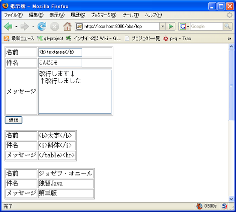

〜掲示板への道〜
7.クロスサイトスクリプティングへの対応編
クロスサイトスクリプティング
ここまでで作成した掲示板にはクロスサイトスクリプティングと呼ばれる重大な欠陥があります。
次の図のように、HTMLのタグを入力して見てください。
送信ボタンを押すと次のようになってしまうはずです。
ここでは、入力をかなり容赦しましたので、テーブルの表示が崩れてしまうだけで済みましたが、
もっといろいろなタグが入力された時のことを想像してみてください。
（JavaScriptに馴染みがなく、あまり酷い想像ができない人は、クロスサイトスクリプティングでいろいろ調べてみてください。）
クロスサイトスクリプティングに対処するには、危険な文字をエスケープ（変換）してあげる必要があります。
次の表は、エスケープが必要な文字の一覧です。
| エスケープ対象の文字 | エスケープされた文字 |
| < | < |
| > | > |
| & | & |
| " | " |
エスケープ用のメソッドを作成する
クロスサイトスクリプティングの怖さが分かったところで、エスケープ用のメソッドを作成しましょう。
%CATALINA_HOME%\webapps\bbs\WEB-INF\classes\jp\co\insightech\WebUtils.java
package jp.co.insightech;
import java.util.*;
public class WebUtils {
/**
* HTMLのエスケープを行います.
*
* @param str 文字列
* @return エスケープ後の文字列
*/
public static String escapeStr(String str){
if(str == null) {
return null;
}
char[] ch = str.toCharArray();
StringBuilder sb = new StringBuilder();
for(int i=0; i<ch.length; i++){
if (ch[i] == '<') {
sb.append("&lt;");
} else if (ch[i] == '>') {
sb.append("&gt;");
} else if (ch[i] == '&') {
sb.append("&amp;");
} else if (ch[i] == '\"') {
sb.append("&quot;");
} else {
sb.append(ch[i]);
}
}
return sb.toString();
}
}
 このメソッドはなぜ static メソッドなのでしょうか。明確に答えられない人は今一度ここで復習しておきましょう
このメソッドはなぜ static メソッドなのでしょうか。明確に答えられない人は今一度ここで復習しておきましょう
〜〜Utils というクラス名
ここでは、WebUtils というクラスを新たに作成しました。
これから皆さんはこのような 〜〜Utils などという名前を持ったクラスにたくさん出会うことでしょう。
ですが、この名前には、センスがありません。
果たしてこの WebUtils というクラスは何をしてくれるクラスなのでしょうか。
今の段階では、エスケープ用のメソッドが一つあるだけです。命名者（私ですが）は今後このクラスに
便利な Utility メソッドをたくさん作るつもりでこの名前を付けたのでしょう。
ですが、一度このような名前のクラスを作ってしまうと、行き場のないメソッドはなんでもかんでもこの
クラスに集まってくるようになってしまいます。
その結果、このクラスは肥大化し見るも無残なごちゃ混ぜクラスと化してしまうのです。
ということで、〜〜Utils などという安易な名前をつけるのは出来るだけ避けてください。
クラスを作る場合はそのクラスに与える役割をよく考えて、その役割を表す名前をつける必要があります。
このクラスの場合で言えば、例えば Escape というクラス名を付けるべきです。
ここでは、この説明をしたかったがために、あえて WebUtils と付けて見ました。
まーこのまま続けましょう。
どこでエスケープ処理を呼び出すか
エスケープ用のメソッドは作りました。さて、このメソッドをどこで呼び出しましょう？
候補としては、
・サーブレットでパラメータを取得した時
・DBにデータを登録する時
・DBからデータを取得した時
・画面（JSP）に表示する時
ぐらいが考えられます。
さてどこがいいですか？
答えは「画面（JSP）に表示する時」です。
データベースに入っているデータは、Webアプリケーションだけが使用するとは限りません。
従って、DBには入力されたままのデータを入れておくべきです。
画面に表示してしまうのが危険なだけですので、「画面（JSP）に表示する時」
だけ変換するのが最も望ましい処理となります。
それでは、エスケープ処理を bbs.jsp に組み入れましょう。
%CATALINA_HOME%\webapps\bbs\WEB-INF\bbs.jsp
<%@ page contentType="text/html; charset=MS932" %>
<%@ page import="jp.co.insightech.*" %>
<%@ page import="java.util.*" %>
<%
Vector messageList = (Vector) request.getAttribute("MESSAGE_LIST");
%>
<html>
<head>
<meta http-equiv="Content-Type" content="text/html; charset=Shift_JIS">
<title>掲示板</title>
</head>
<body>
<form action="./top" method="POST">
<table border="1">
<tr>
<td>名前</td>
<td><input type="text" name="name"></td>
</tr>
<tr>
<td>件名</td>
<td><input type="text" name="subject"></td>
</tr>
<tr>
<td>メッセージ</td>
<td><input type="text" name="content"></td>
</tr>
</table>
<input type="submit" name="sendMessage" value="送信">
</form>
<%
for (int i = 0; i < messageList.size(); i++) {
Message message = (Message) messageList.get(i);
%>
<table border=1>
<tr><td>名前</td><td><%= WebUtils.escapeStr(message.getName()) %></td></tr>
<tr><td>件名</td><td><%= WebUtils.escapeStr(message.getSubject()) %></td></tr>
<tr><td>メッセージ</td><td><%= WebUtils.escapeStr(message.getContent()) %></td></tr>
</table><br>
<%
}
%>
</body>
</html>
これでクロスサイトスクリプティングの対応が完了しました。
もう一度画面を表示してみてください。
次の図のように、入力したタグがそのまま表示されるようになったはずです。
メッセージを複数行入力できるようにする
さて、ついでに、メッセージを複数行入力できるようにテキストボックスからテキストエリアに変更しましょう。
変更が必要なのは bbs.jsp のみです。
%CATALINA_HOME%\webapps\bbs\WEB-INF\bbs.jsp
<%@ page contentType="text/html; charset=MS932" %>
<%@ page import="jp.co.insightech.*" %>
<%@ page import="java.util.*" %>
<%
Vector messageList = (Vector) request.getAttribute("MESSAGE_LIST");
%>
<html>
<head>
<meta http-equiv="Content-Type" content="text/html; charset=Shift_JIS">
<title>掲示板</title>
</head>
<body>
<form action="./top" method="POST">
<table border="1">
<tr>
<td>名前</td>
<td><input type="text" name="name"></td>
</tr>
<tr>
<td>件名</td>
<td><input type="text" name="subject"></td>
</tr>
<tr>
<td>メッセージ</td>
<td><textarea name="content" rows="5" cols="20"></textarea></td>
</tr>
</table>
<input type="submit" name="sendMessage" value="送信">
</form>
<%
for (int i = 0; i < messageList.size(); i++) {
Message message = (Message) messageList.get(i);
%>
<table border=1>
<tr><td>名前</td><td><%= WebUtils.escapeStr(message.getName()) %></td></tr>
<tr><td>件名</td><td><%= WebUtils.escapeStr(message.getSubject()) %></td></tr>
<tr><td>メッセージ</td><td><%= WebUtils.escapeStr(message.getContent()) %></td></tr>
</table><br>
<%
}
%>
</body>
</html>
では実行してみましょう。次の図のように入力して

送信ボタンを押すと、結果は・・・
思ったとおり改行されていません・・・。
理想は次のようになることです。
最初に「ついでに」と言った意味が分かりましたか？
これを解決するには、先ほど作った WebUtils#escapeStr を変更すればよいのです。
%CATALINA_HOME%\webapps\bbs\WEB-INF\classes\jp\co\insightech\WebUtils.java
package jp.co.insightech;
import java.util.*;
public class WebUtils {
/**
* HTMLのエスケープを行います.
*
* @param str 文字列
* @return エスケープ後の文字列
*/
public static String escapeStr(String str){
if(str == null) {
return null;
}
char[] ch = str.toCharArray();
StringBuilder sb = new StringBuilder();
for(int i=0; i<ch.length; i++){
if (ch[i] == '<') {
sb.append("&lt;");
} else if (ch[i] == '>') {
sb.append("&gt;");
} else if (ch[i] == '&') {
sb.append("&amp;");
} else if (ch[i] == '\"') {
sb.append("&quot;");
} else if (ch[i] == '\n') {
sb.append("<br>");
} else {
sb.append(ch[i]);
}
}
return sb.toString();
}
}
©日本インサイトテクノロジー株式会社